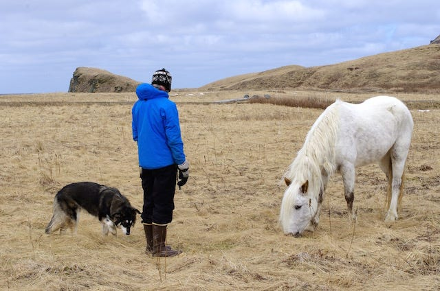

Select any image below to experience the capabilities of Machine Learning in recognizing objects within the image. This demonstration showcases not just the identification of objects but also their precise location in the picture, which can be incredibly useful.
